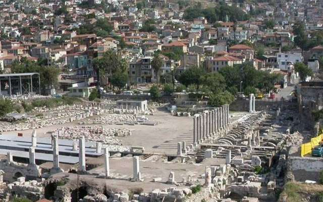
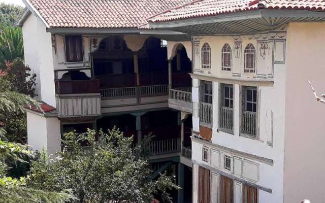

الرئيسية › أماكن تستحق الزيارة حسب الولاية › إزمير
يضم دليل Kültür Varlıkları 43 مكانًا في إزمير: 20 موقع أثري, 18 متحف, 4 قلعة ومبنى تاريخي, 1 مبنى ديني. ستجد أدناه أبرز الأماكن وخريطة والقائمة الكاملة.
⭐ أبرز الأماكن

1 · إزمير · موقع أثريأكروبوليس برغاموم
كان أكروبوليس برغامة القلب السياسي والثقافي لبرغاموم، عاصمة المملكة البرغامية الهلنستية، وقد بُني على تل شديد الانحدار يرتفع مئات الأمتار فوق السهل.

2 · إزمير · موقع أثريأفسس
كانت أفسس من أعظم المدن المينائية في العصور القديمة، ومن ألمع مراكز ولاية آسيا الرومانية، وكان معبد أرتميس، إحدى عجائب الدنيا السبع، يقوم بالقرب منها.

3 · إزمير · موقع أثريموقع أسكليبيون برغاموم الأثري
كان أسكليبيون برغاموم، المكرّس لإله الشفاء أسكليبيوس، من أشهر المراكز العلاجية في العالم القديم.
🗺 على الخريطة
📍 جميع الأماكن (43)
موقع أثري (20)
أكروبوليس برغامومموقع أثري · UNESCOأفسسموقع أثري · UNESCOموقع أسكليبيون برغاموم الأثريموقع أثري · UNESCO البازيليكا الحمراء في برغامةموقع أثري · UNESCO
البازيليكا الحمراء في برغامةموقع أثري · UNESCO
موقع أغورا سميرنا الأثريموقع أثري موقع بازيليكا القديس يوحنا (أياسولوك)موقع أثري
موقع بازيليكا القديس يوحنا (أياسولوك)موقع أثري بيوت المنحدر في أفسسموقع أثري
بيوت المنحدر في أفسسموقع أثري مدينة إريثراي الأثريةموقع أثري
مدينة إريثراي الأثريةموقع أثري سميرنا القديمةموقع أثري
سميرنا القديمةموقع أثري نقش كارابل الصخريموقع أثري
نقش كارابل الصخريموقع أثري موقع كلاروس الأثريموقع أثري
موقع كلاروس الأثريموقع أثري كولوفونموقع أثري
كولوفونموقع أثري مدينة كيمي الأثريةموقع أثري
مدينة كيمي الأثريةموقع أثري ليبيدوسموقع أثري
ليبيدوسموقع أثري موقع ميتروبوليس الأثريموقع أثري
موقع ميتروبوليس الأثريموقع أثري مدينة نوتيون الأثريةموقع أثري
مدينة نوتيون الأثريةموقع أثري فوكايا (فوتشا)موقع أثري
فوكايا (فوتشا)موقع أثري موقع تيوس الأثريموقع أثري
موقع تيوس الأثريموقع أثري تل يشيل أوفاموقع أثريموقع كلازوميناي الأثريموقع أثري
تل يشيل أوفاموقع أثريموقع كلازوميناي الأثريموقع أثريمتحف (18)
 متحف أفسسمتحف
متحف أفسسمتحف أرشيف ومتحف مدينة أحمد بيريشتينامتحف
أرشيف ومتحف مدينة أحمد بيريشتينامتحف مركز أركاس للفنونمتحف
مركز أركاس للفنونمتحف متحف برغامةمتحف
متحف برغامةمتحف
قصر تشاكير آغا في بيرغيمتحف متحف بوستانلي الأثري المفتوحمتحف
متحف بوستانلي الأثري المفتوحمتحف متحف كيمتحف
متحف كيمتحف بيت ذكرى قصر لطيفة هانممتحف
بيت ذكرى قصر لطيفة هانممتحف متحف تشاملك للقاطرات البخاريةمتحف
متحف تشاملك للقاطرات البخاريةمتحف متحف تشيشمهمتحف
متحف تشيشمهمتحف متحف إزمير الأثريمتحف
متحف إزمير الأثريمتحف مصنع الثقافة والفن في إزميرمتحفمتحف تجربة أفسسمتحفمتحف التاريخ الطبيعي بجامعة إيجهمتحفمتحف تيرهمتحفمتحف أوديمشمتحفمتحف أتاتورك في إزميرمتحفمتحف الرسم والنحت في إزميرمتحف
مصنع الثقافة والفن في إزميرمتحفمتحف تجربة أفسسمتحفمتحف التاريخ الطبيعي بجامعة إيجهمتحفمتحف تيرهمتحفمتحف أوديمشمتحفمتحف أتاتورك في إزميرمتحفمتحف الرسم والنحت في إزميرمتحفقلعة ومبنى تاريخي (4)
 قلعة أياسولوكقلعة ومبنى تاريخي
قلعة أياسولوكقلعة ومبنى تاريخي قصر نيمفايون (نيف)قلعة ومبنى تاريخي
قصر نيمفايون (نيف)قلعة ومبنى تاريخي قرية شيرينجهقلعة ومبنى تاريخيقلعة قديفة (جبل باغوس)قلعة ومبنى تاريخي
قرية شيرينجهقلعة ومبنى تاريخيقلعة قديفة (جبل باغوس)قلعة ومبنى تاريخي